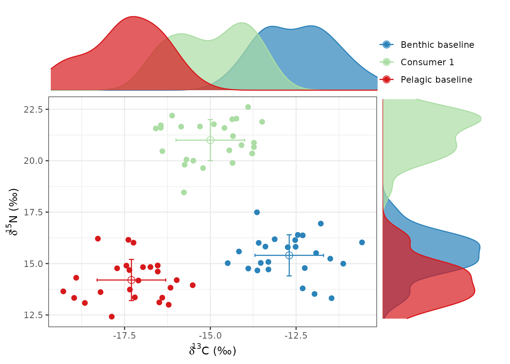
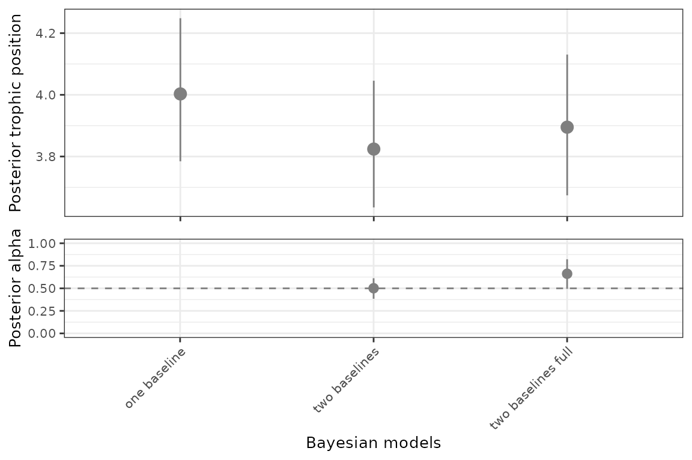
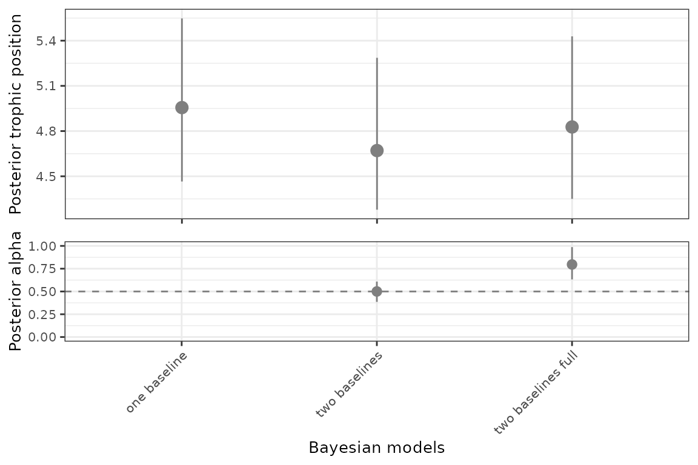

Using tRophicPosition to estimate TP through the use of multiple models
Claudio Quezada-Romegialli, Andrew L Jackson & Chris Harrod
December 11 2022
Source:vignettes/Multiple_model_calculation_of_trophic_position_in_R.Rmd
Multiple_model_calculation_of_trophic_position_in_R.RmdtRophicPosition
tRophicPosition, is an R package incorporating a
Bayesian model for the calculation of trophic position using stable
isotopes with one or two baselines. As of 2022-12-11, the current
version of the package is 0.8. tRophicPosition uses the
powerful approach of Markov Chain Monte Carlo simulations provided by JAGS and the statistical
language R. Vignettes can be
browsed with browseVignettes("tRophicPosition").
Introduction
In this vignette, we will introduce the new functions we have
developed for tRophicPosition in the version 0.6.8. These
functions are multiModelTP(),
credibilityIntervals(), pairwiseComparisons()
and parametricTP(). Each of these functions accomplish
different tasks within the Bayesian estimation of trophic position with
stable isotopes, facilitating the calculation of multiple models (either
one, two baselines and/or two baselines full model of trophic position)
for a single species, pairwise comparisons of posterior estimates of
trophic position and/or alpha parameters, plotting of credibility
intervals of posterior estimates of trophic position and/or alpha, and
calculation of a parametric (non-Bayesian) estimate of trophic
position.
Installing and loading the package
Stable version - CRAN
First of all, you need to install JAGS for your platform, and
then install the stable version of tRophicPosition from CRAN:
install.packages("tRophicPosition")After that, you have to load the package with:
Development version - GitHub
If you want to install the development version of
tRophicPosition, you must install it from GitHub. For this,
we use the function install_github() from the package
devtools (installation instructions here),
which needs to be installed previously (either from CRAN or GitHub):
install.packages("devtools")
library(devtools)If you are working in Windows, devtools also requires Rtools, or if
you are working on a Mac, Xcode (from Apple Store).
In Linux you will need to install a compiler and various development
libraries.
Besides installing devtools, you must also install JAGS (Just Another Gibbs
Sampler), which is at the core of the Bayesian model analysis supporting
tRophicPosition.
install_github("clquezada/tRophicPosition", build_vignettes = TRUE)After installing tRophicPosition, it should be loaded
into memory, which automatically reports the version of the software (we
need at least 0.6.8-8 to use the routines described in this
vignette).
## This is tRophicPosition 0.8.0Future releases and how to get support
You are encouraged to use tRophicPosition with your own
data, test the package and see if there are any issues or problems. You
can send your questions or commentaries to the google group tRophicPosition-support
or directly to the email trophicposition-support@googlegroups.com. You can send
your questions to https://stackexchange.com/ https://stackoverflow.com/ or even Facebook (stable
isotope ecology group).
We are constantly working on future releases of
tRophicPosition, so feedback is very much appreciated.
Calculation of TP for one species using multiple Bayesian models
To demonstrate how tRophicPosition works, we will
simulate some data. For example, imagine we have a fish species of
interest that has mean
(
SD) values of
N
of 21‰
(
1‰), and
C
of -15‰
(
1‰). Also, as in many aquatic ecosystems, this fish lives in a system
with two sources of C and N, meaning that we have to deal with two
different baselines. One of the baselines has mean
(
SD) values of
N
of 14.2‰
(
1‰) and
C
-17.3‰
(
1‰), while the other baseline has mean values of 15.4‰
(
1‰) and -12.7‰
(
1‰)
(N
and
C
respectively). We will use the function generateTPData() to simulate
this simple ecosystem.
consumer1 <- generateTPData(dCb1 = -17.3, dNb1 = 14.2,
dCc = -15, dNc = 21,
dCb2 = -12.7, dNb2 = 15.4,
DeltaN = 3.4, sd.DeltaN = 0.98,
DeltaC = 0.39, sd.DeltaC = 1.3,
consumer = "Consumer 1")In this function we have also indicated mean and sd values for
trophic discrimination factors for DeltaN
(N)
and DeltaC
(C),
and also have indicated a name for the consumer. Remember that all the
functions have a help page where you will find other options (write for
example ?generateTPData in the console).
Now that we have our simple ecosystem simulated, we will plot it:
plot(consumer1)
In this figure we can see that sample of simulated fish consumers is
exactly located in-between both baselines on the
C
axis, and also, our fish is 6.8‰ above the baseline 1 in terms of its
N
value. If we use a one baseline model, and if the trophic level of
baseline 1 (lambda) is 2, we would expect a mean trophic
position of 4 for our simulated fish species. If we use a two baselines
model without fractionation for carbon, we would expect an
alpha value of 0.5, which means that each baseline is
contributing in 50% of the energy inputs to our fish. Finally, if we use
a two baselines full model (including fractionation for
C),
the trophic position of our fish would depend on both baselines, and the
relative contribution of each baseline would depend on the trophic
discrimination factors
(N
and
C).
Clearly, this is worth exploring more, so we will calculate (and
compare) estimates for TP using these models with the function
multiModelTP().
consumer1_models <- multiModelTP(consumer1)## Compiling model graph
## Resolving undeclared variables
## Allocating nodes
## Graph information:
## Observed stochastic nodes: 106
## Unobserved stochastic nodes: 31
## Total graph size: 149
##
## Initializing model
##
## Compiling model graph
## Resolving undeclared variables
## Allocating nodes
## Graph information:
## Observed stochastic nodes: 206
## Unobserved stochastic nodes: 14
## Total graph size: 243
##
## Initializing model
##
## Compiling model graph
## Resolving undeclared variables
## Allocating nodes
## Graph information:
## Observed stochastic nodes: 313
## Unobserved stochastic nodes: 66
## Total graph size: 404
##
## Initializing modelmultiModelsTP() requires an object of the class
isotopeData, which was created previously by the function
generateTPData(). By default multiModelsTP()
defines a lambda = 2 for the baselines, uses 2 chains
(n.chains = 2) to do the Bayesian calculation with 20,000
adaptive iterations (n.adapt = 20000), 20,000 actual
iterations (n.iter = 20000), 20,000 iterations as burnin
(burnin = 20000) and a thinning of 10
(thin = 10). Furthermore, it estimates TP using three
different Bayesian models: one baseline, two baselines and two baselines
full
(models = c("oneBaseline", "twoBaselines", "twoBaselinesFull").
The default setting is to limit the amount of output for each model run
(print = FALSE). NB: The user can change any of these options, simply
adding them as arguments to multiModelTP(), see
?multiModelTP() for details.
Also, by default this function uses Post’s (2002) assumptions on TDF (i.e. 56 values with mean 3.4 0.98 SD for N and 107 values with mean 0.39 1.3 SD for C).
For example, if we have used the option print = TRUE as
argument (i.e. multiModelTP(print = TRUE)), we would have a
trace plot for every model (to check graphically if our parameters of
interest TP, muDeltaN and alpha
have converged), and if more than 1 chain were used, also would have
printed two statistics from the coda package: Gelman and Rubin’s
convergence diagnostic statistics (see ?gelman.diag for a detailed
explanation). Basically, we expect that potential scale reduction
factors for each parameter is close to 1, which means that our model has
converged and it is reliable.
These estimates have been generated using Post’s (2002) mean
estimates for TDFs, which are commonly used across a wide range of
ecological studies. Now that we have calculated the trophic position for
our simulated fish in a simple ecosystem, we will do the same
calculation, but this time, we will change the trophic discrimination
factor from Post’s (2002) values to McCutchan’s et al. (2003) values in
order to examine the sensitivity of the models to TDF estimates. To do
this, we will we will generate consumer2 with the same
isotope values as consumer1 and simply change the variables
deltaN and deltaC within the object
consumer2.
consumer2 <- generateTPData(dCb1 = -17.3, dNb1 = 14.2,
dCc = -15, dNc = 21,
dCb2 = -12.7, dNb2 = 15.4,
consumer = "Consumer 2")
consumer2$deltaN <- TDF(author = "McCutchan", element = "N")## You selected McCutchan's et al (2003)
## All d15N: 73 values with mean 2.3 +- 0.18 se
consumer2$deltaC <- TDF(author = "McCutchan", element = "C")## You selected McCutchan's et al (2003)
## All d13C: 102 values with mean 0.5 +- 0.13 seAnd now we will calculate the three Bayesian models of trophic position again, with the only difference being we have changed their TDF values.
consumer2_models <- multiModelTP(consumer2)## Compiling model graph
## Resolving undeclared variables
## Allocating nodes
## Graph information:
## Observed stochastic nodes: 123
## Unobserved stochastic nodes: 31
## Total graph size: 166
##
## Initializing model
##
## Compiling model graph
## Resolving undeclared variables
## Allocating nodes
## Graph information:
## Observed stochastic nodes: 223
## Unobserved stochastic nodes: 14
## Total graph size: 260
##
## Initializing model
##
## Compiling model graph
## Resolving undeclared variables
## Allocating nodes
## Graph information:
## Observed stochastic nodes: 325
## Unobserved stochastic nodes: 66
## Total graph size: 416
##
## Initializing modelIn both cases we have calculated three Bayesian models (one baseline,
two baselines without fractionation for C, and two baselines full model
with C fractionation) for two simulated simple ecosystems consisting of
one fish and 2 baselines, and the only difference between consumer 1 and
consumer 2 is the trophic discrimination factor. In the first case we
included Post’s (2002) values, and in the second case we included
McCutchan’s et al. (2003) values for both N and C. We have saved the
output of multiModelTP() into two objects
consumer1_models and consumer2_models, and now
we will analyze the results.
If you are using RStudio, in the environment tab you will see that
both consumer1_models and consumer2_models are
lists of 4 elements each. The first element is a data frame named TP.
This dataframe has the posterior samples of TP for each model. The
second element is also a data frame, named alpha in this case, which
includes the posterior samples of alpha for 2 of the 3 models (only the
two baselines models calculate alpha, i.e. the relative contribution of
the baseline 1). The third element is a data frame as well, named gg (to
indicate us that has the structure required to use the ggplot2 package).
This data frame has summary values of both posterior samples of trophic
position and alpha: median and 95% credibility interval, grouped by
model, community and species. The fourth and last element is a list of 3
elements named samples, that has raw posterior mcmc samples if you want
to summarise the information, or analyze it in a different way. The
first three elements (data frames TP, alpha and gg) are based in these
raw posterior samples of every Bayesian model, summarised by
multiModelsTP() for convenience.
We can produce a detailed summary of the structure described above
using the function str():
str(consumer1_models)In order to plot the mode and 95% credibility interval for both
posterior trophic position and alpha, we can use the function
credibilityIntervals():
# For consumer 1 (based on Post's (2002) TDF values)
credibilityIntervals(consumer1_models$gg, x = "model")
This figure provides mode ( 95% credibility interval) for posterior estimates trophic position from the three different models (one baseline two baselines and two baselines full), as well as alpha (only given for two baselines models).
# For consumer 2 (based on McCutchan's (2003) TDF values)
credibilityIntervals(consumer2_models$gg, x = "model")
The arguments df = consumer1_models$gg and
x = model above, tells the function
credibilityIntervals() to plot the data frame
consumer1_models$gg using the model column within that data
frame as the independent variable (x), and by default using
the mode as the central tendency descriptor (see
credibilityIntervals() for details). If you want to plot
the median instead of the mode add y1 = "median and
y2 = "alpha.median" as arguments within
credibilityIntervals(). When we have multiple species or
several communities we will change this (e.g. see the vignette multiple
species calculation of trophic position).
Why we need of accurate trophic discrimination factors (TDF)?
Probably, the single and most important assumption to get accurate and reliable estimations of trophic position is the trophic discrimination factor, either for nitrogen N (one and two baselines models) and both N and C for the two baselines full model. Obviously, the use of a non-representative TDF estimate for either N or C can affect both trophic position estimations and the alpha parameter.
Now we will examine the impact of using the different TDFs for our
simulated consumers. We have estimated trophic position and alpha for
both consumers groups (differing only in TDF) and will test for
statistical differences between posterior samples of these parameters.
First, we must change the names of both posterior samples, because they
have the same name (as they were calculated with
multiModelsTP()):
# Here we see that we have 4002 posterior samples of 3 parameters
# (one for each Bayesian model) for consumer1
str(consumer1_models$TP)## List of 3
## $ 1b : num [1:4002] 4.09 3.91 3.94 3.73 3.93 ...
## $ 2b : num [1:4002] 3.74 3.77 3.8 3.99 3.7 ...
## $ 2bf: num [1:4002] 4.17 3.79 3.85 3.83 3.71 ...
# And also 4002 posterior samples (for each 3 Bayesian models) for consumer2
str(consumer2_models$TP)## List of 3
## $ 1b : num [1:4002] 4.82 4.76 4.65 4.78 4.94 ...
## $ 2b : num [1:4002] 4.71 4.31 4.94 5.22 4.44 ...
## $ 2bf: num [1:4002] 5.28 4.88 5.23 5.61 5.03 ...
# But the names of each variables are the same for both consumers
# For consumer1
names(consumer1_models$TP)## [1] "1b" "2b" "2bf"
# For consumer2
names(consumer2_models$TP)## [1] "1b" "2b" "2bf"
# So, we change them in order to compare them.
# To make things clear, consumer 1 will be "Post" and consumer 2 will be
# "McCutchan". # Also, one baseline Bayesian model will be model1, two
# baselines model will be model2 and two baselines full model will be model2F
names(consumer1_models$TP) <- c("Post-model1",
"Post-model2",
"Post-model2F")
names(consumer2_models$TP) <- c("McCutchan-model1",
"McCutchan-model2",
"McCutchan-model2F")A useful first step is to summarize the posterior distributions to
get a quantitative idea of how different they are. For this, we will use
the base function (i.e. that comes with R) sapply(). This
function is part of the lapply functions that apply a
function (in this case summary) over a list. As we have two
lists (consumer1_models$TP and
consumer2_models$TP) first we need to use the
c operator, that combines them, then we will calculate a
summary for the combined element:
# Here we combine posterior estimates of trophic position for both consumers
combined_models <- c(consumer1_models$TP, consumer2_models$TP)
# Then we calculate a summary of posterior trophic position
sapply(combined_models, summary)## Post-model1 Post-model2 Post-model2F McCutchan-model1 McCutchan-model2
## Min. 3.608028 3.415638 3.493050 4.085558 4.003042
## 1st Qu. 3.921280 3.756448 3.806252 4.808365 4.550024
## Median 4.002738 3.827421 3.885791 4.986985 4.712765
## Mean 4.006179 3.830818 3.888840 5.006483 4.733087
## 3rd Qu. 4.084321 3.901013 3.962907 5.173656 4.899018
## Max. 4.435879 4.246032 4.453742 6.580966 6.433009
## McCutchan-model2F
## Min. 4.093534
## 1st Qu. 4.685633
## Median 4.856066
## Mean 4.875364
## 3rd Qu. 5.045211
## Max. 6.257308
# And we calculate the modes
getPosteriorMode(combined_models)## Post.model1 Post.model2 Post.model2F McCutchan.model1
## Posterior mode 4.003 3.824 3.895 4.956
## McCutchan.model2 McCutchan.model2F
## Posterior mode 4.671 4.827Here we have a rudimentary summaries of posterior trophic position estimates associated with each model for both consumers. For example, the median TP for consumer 1 based on the one baseline model (Post-model1) is higher than consumer 1 calculated with both 2 baselines (Post-model2) and 2 baselines full (Post-model2F) models. It appears that the same is true for consumer 2, where median TP estimated for the one baseline model (McCutchan-model1) is higher than that for both two baselines model (McCutchan-model2 and McCutchan-model2F).
As we are operating in a Bayesian universe, there is little sense to state a threshold under or above which both distributions will be considered different (as used in a frequentist universe e.g. p > 0.05). Instead, we think rather of comparing posterior distributions. For example, we can say that two posterior trophic position estimates will be considered different if their samples of posterior distributions are 100% different. In this stringent case and considering Post-model1 and McCutchan-model1 posterior estimates of trophic position, we would expect then that all the posterior estimates of Post-model1 are lesser than posterior estimates of McCutchan-model1.
compareTwoDistributions(combined_models$"Post-model1",
combined_models$"McCutchan-model1",
test = "<=")## [1] 1Above, we can see that trophic position posterior estimate of one baseline model using Post’s (2002) TDF assumptions has a proportion of 4000 observations over the 4000 we sampled (i.e. 4000 / 4000 = 1) that are lesser or equal than trophic position posterior estimate of the same one baseline model but using McCutchan’s (2003) TDF assumptions. Thus, we are pretty confident that posterior estimation of trophic position calculated with one baseline Bayesian model with Post’s (2000) assumptions is higher than posterior estimation of trophic position calculated with McCutchan’s TDF assumptions. Remember that this is the same simulated fish consumer, in the same simple ecosystem, only considering differents TDF assumptions.
By default compareTwoDistributions() evaluates how many
observations from combined_models$"Post-model1" are
(less than or equal) than
combined_models$"McCutchan-model1", randomly drawn from
each of the models posterior distribution. We can change to
,
or
stating the argument within pairwiseComparisons function
(add test = ">=", for example).
We can make a more detailed comparison of the different models and
TDFs using the pairwiseComparisons() function, which as its
name suggests, produces a matrix of of pairwise comparisons:
pairwiseComparisons(combined_models, test = "<=")## [1] [2] [3] [4] [5] [6]
## [1] Post-model1 0.000 0.135 0.241 1.000 0.998 1.000
## [2] Post-model2 0.865 0.000 0.639 1.000 1.000 1.000
## [3] Post-model2F 0.759 0.361 0.000 1.000 1.000 1.000
## [4] McCutchan-model1 0.000 0.000 0.000 0.000 0.231 0.371
## [5] McCutchan-model2 0.002 0.000 0.000 0.769 0.000 0.647
## [6] McCutchan-model2F 0.000 0.000 0.000 0.629 0.353 0.000The matrix generated by this function is symmetrical, below the diagonal we have the results of quatifying the proportion of posterior samples of the model in row are less or equal than posterior samples of the model in the column, while above the diagonal we have the results of quantifying the proportion of posterior samples of the model in the column are higher than posterior samples of the model in the row.
Parametric trophic position
As an appendix, we will calculate the parametric (i.e. non-Bayesian)
version of trophic position. For this, we have to iterate through each
consumer, and do the calculation with parametricTP().
# First we combine both consumers' isotope values into a named list
consumers <- list("consumer1" = consumer1, "consumer2" = consumer2)
# And then, we calculate parametric TP using a loop for
for (consumer in consumers) parametricTP(consumer)## [1] "***************************************"
## [1] "Parametric version of trophic position"
## [1] "For consumer: Consumer 1"
## [1] "One baseline TP: 4"
## [1] "Two baselines TP: 3.82 0.5"
## [1] "Full model TP. At the beginning: 3.82 0.662"
## [1] "Convergence after 8 iterations. TP: 3.88 alpha: 0.665"
## [1] "***************************************"
## [1] "Parametric version of trophic position"
## [1] "For consumer: Consumer 2"
## [1] "One baseline TP: 4.96"
## [1] "Two baselines TP: 4.7 0.5"
## [1] "Full model TP. At the beginning: 4.7 0.755"
## [1] "Convergence after 10 iterations. TP: 4.83 alpha: 0.763"